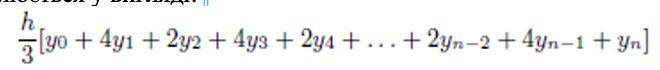
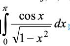

Розв’язати нелінійне рівняння x=cos(x) методами перебору та хорд, визначивши інтервал [a, b], на якому існує рішення рівняння. Значення a, b інтервалу вибрати самостійно. Порівняти результати розв’язків двома методами.
За допомогою формули Сімпсона інтеграл функції f(х) від a до b наближено обчислюється у вигляді:
де h = (b - a) / n, для якогось парного цілого числа n, yk = f (a + kh). (Збільшення n підвищує точність наближеного обчислення.) Визначити процедуру, яка приймає в якості аргументів f, a, b, n, та повертає значення інтеграла, обчисленого за формулою Сімпсона.
